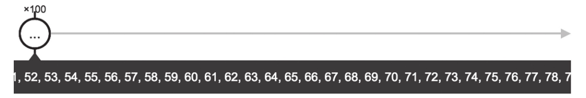

of能够简化Observable对象的产生，但假如需求是这样：产生一个从1到100的所有正整数构成的数据流。
满足这样的需求，用of显然不合适，要是给of一个长度为100的参数序列，从1到100，不要说这样的代码写出来很累，就算写出来也根本没法看。
对需要产生一个很大连续数字序列的场景，就用得上range这个操作符了，range的含义就是“范围”，只需要指定一个范围的开始值和长度，range就能够产生这个范围内的数字序列。
产生包含上面所说从1到100所有正整数的Observable对象，代码如下：
const source$ = Observable.range(1, 100);
range第一个参数是数字序列开始的数字，第二个参数是数字序列的长度，产生的Observable对象首先产生数字1，每次递增1，依次产生100个数字，然后完结。
对应的弹珠图如图4-3所示。

图4-3 range的弹珠图
和of一样，range以同步的方式吐出数据，也就是100个数据依次无时间间隔一口气全推给Observer，然后调用Observer的complete函数。
range的第一个参数不仅可以是整数，还可以是任何数字，像下面这样使用：
const source$ = Observable.range(1.5, 3);
这样产生的数字序列是从1.5开始，每次递增1，一共吐出3个数据，产生的数据序列就是：1.5、2.5、3.5。
读者这时候可能会问，如果我想要的是每次递增2的数字序列呢？range有没有参数可以定制每次递增的大小呢？
很遗憾，range并不支持这样的参数，RxJS提供的每个操作符都包含尽量简洁的功能，但是通过多个操作符的组合，就可以提供复杂的功能，特定于上述的需求，虽然range不支持递增序列的定制，但是我们通过range和map的组合来实现，代码如下：
const source$ = Observable.of(1, 2, 3).map(x => x * 2);
虽然上面的代码事实上产生了我们想要的结果，但是读者可能还是觉得不满意，那么，我们就来看一个定制性更强的操作符，名为generate。